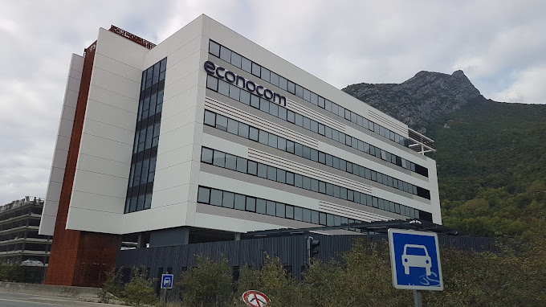

Cette partie a pour but de relater au fur et à mesure, mes expériences professionnelles en entreprise.
Stage

Stage dans l'entreprise Econocom
- Mise en place d'une PSSI Dev.
- Sensibilisation à la norme ISO 27001.
- Management d'un SMSI.
- Référencement d'un outil pour l'analyse risque.
- Travail au coeur d'une équipe de sécurité (Equipe SSI).
Ce stage s'est déroulé sur une durée de 10 semaines, du 14/04/2025 au 20/06/2025. Il s'inscrit dans le programme de formation du BUT informatique, celui-ci dure de 8 à 12 semaines en 2ème année. J'étais intégré dans une équipe SSI, et je me suis chargé de mettre en place une politique de sécurité du système d'information pour le développement (PSSI Dev). J'ai beaucoup appris durant ce stage, le fait de me détacher de la technique pur qui était enseigné dans ma formation, et d'avoir un rôle dans le management d'un SMSI, m'a permis d'améliorer mon esprit de finesse en synthétisant de manière claire des normes de sécurités que des développeurs suivent aujourd'hui. J'ai développé des compétences dans la gestion des projets qui n'étaient pas enseignées au sein de mon IUT, cela m'a permis de connaître l'environnement de travail informatique dans la sécurité d'une ESN.